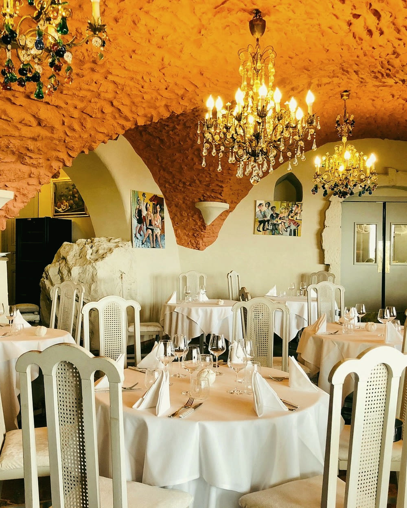

LES VIEUXMURS
Découvrir
Trois siècles de pierre,
une vue sans fin
Au sommet des remparts du vieil Antibes, côté est, Les Vieux Murs regardent la baie de Nice et le Cap d'Antibes. À l'intérieur, des voûtes anciennes et des pierres nues ; dehors, une terrasse ouverte le midi, dès que le temps le permet.
La famille Arnal tient la maison depuis 2009, avec une équipe attachée au détail, au service et à l'accueil. L'adresse est connue bien au-delà d'Antibes — elle est restée une maison de famille.

Le chef
Stéphane
Arnal
« Entre héritage et création, une cuisine en mouvement. »
Chef et directeur — Les Vieux Murs
Formé à la cuisine et à la pâtisserie dès l'enfance, Stéphane Arnal a fait ses armes à l'Hôtel Negresco puis au Moulin de Mougins. En 2009, avec son épouse Marie-Laure, il reprend Les Vieux Murs.
Sa cuisine est méditerranéenne d'influence provençale, tenue par une règle simple : le fait maison, du premier geste au dernier.
La carte
Au rythme
des saisons
La carte évolue avec le marché et les pêches du jour. Toutes nos viandes sont d'origine française.
Velouté de saison
18 €Crème fleurette
Petits farcis
18 €Légumes de saison farcis à la viande
Dos de truite gravlax
18 €Huile d'olive bergamote, coriandre
Pâté de campagne
20 €Noisettes, pistaches, grosses câpres
Fraîcheur de crustacés
22 €Pommes vertes, zestes de citron
Tranche de foie gras mi-cuit
25 €Chutney pommes poires
6 huîtres fines de claires n°2
25 €Caviar Baeri français, 15 g
65 €Caviar Osciètre français, 50 g
235 €Raviolis maison à la daube
28 €Linguines au pistou
30 €Linguines bolognaise
35 €Linguines flambées à la grappa, servies dans la meule de parmesan
60 €Grana Padano affiné 12 mois — pour deux personnes
L'Estocafic
28 €Met typiquement niçois. Aiglefin boucané, sauce tomatée — un plat à l'odeur atypique, haut en saveurs.
Poisson sauvage du moment
35 €Bouillabaisse « LVM »
58 €Pêche du jour cuite au four
12 € / 100 gPoisson servi entier. Garniture au choix, légumes ou purée, 10 €. Le prix dépend du poids du poisson.
Parmentier de retour de chasse
38 €Aux olives taggiasches
Demi-pigeon royal en feuilleté
38 €Sauce au foie gras
Tournedos de veau poêlé au beurre
38 €Tartelette forestière
Filet de bœuf grillé
38 €Beurre maître d'hôtel — garniture en supplément
Suprême de volaille en cocotte
45 €Parfumé aux herbes de nos collines — garniture en supplément
Ris de veau rôti au beurre noisette
50 €Linguines à la crème d'ail
Châteaubriand
100 €Pour deux personnes, 600 à 800 g. Garniture en supplément — comptez 20 minutes de cuisson.
Chariot de fromages français et régionaux
20 €Crème brûlée au miel du rucher La Maïris
10 €Thierry Lamboglia, apiculteur récoltant à Lantosque
Coupe de fruits frais
10 €Le classique baba au rhum
12 €Tartelette de saison
12 €Notre pot de sorbet maison
14 €Cassis, poire, orange, citron ou ananas
Soufflé au Grand Marnier
15 €Comptez 20 minutes d'attente
Moelleux au chocolat noir 72 %
15 €Café gourmand
15 €Omelette norvégienne
40 €Pour deux personnes
Les signatures
Les linguines à la grappa
Flambées en salle et servies dans la meule de parmesan. Le plat que l'on commande sans regarder la carte, pour deux.
L'Estocafic
Le stockfisch niçois, mijoté à la tomate. Une odeur franche, un goût plus franc encore — la tradition du pays telle quelle.
Le soufflé au Grand Marnier
Vingt minutes d'attente, annoncées dès la commande. C'est le prix d'un soufflé qui arrive encore haut à table.
Autour des Vieux Murs
Le bar — 10h à 22h, tous les jours
Horaires et accès
L'Amiral
Un verre face à la baie, avant le service ou bien après. Cocktails, vins au verre et petite restauration, sur les remparts.
Réceptions · Traiteur · Coffrets
Nous écrire
Vos événements
Privatisation de la salle voûtée ou de la terrasse, service traiteur chez vous, coffrets cadeaux. Dites-nous ce que vous imaginez.
Nous rencontrer
Les Vieux Murs
Antibes — Côte d'Azur
Votre table
vous attend
Réservation en ligne à toute heure, ou par téléphone pendant le service. Pour la terrasse, prévenez-nous : elle est ouverte le midi, selon le temps.
- Adresse25 promenade Amiral de Grasse
06600 Antibes, France - Déjeuner12h00 — 14h00
- Dîner19h00 — 21h00
- FermetureDimanche soir et lundi soir
- Bar L'Amiral10h00 — 22h00, tous les jours
- AccèsRemparts piétonnisés : à pied ou en taxi. Parkings du Port Vauban.
- Téléphone+33 (0)4 93 34 06 73